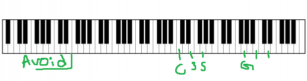

Concepts:
- Input a Note and check certain boxes to filter the information. After, a page will come up showing the contents of what you want; spanning from chord progressions to chords that sound good within that key and what to avoid.
- Create a piano, that can make sounds when pressed and have multiple options, these include knobs to increase or decrease certain parameters (volume, speed, reverb, envelope, etc.> and have multiple different sound options (guitars, vibraphone, chimes, strings, etc.)